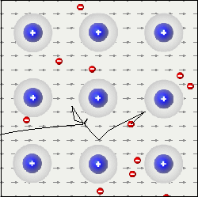

So, how can a lot of loose electrons cause a metal to be a good conductor? This is because each electron is an electric charge that is free to move. Moving electric charges can make up a current. But this is only true if they move the same way.
Due to thermal kinetic energy of the electrons and ions in the metal, these conduction electrons move in a random, disordered way, with a velocity close to 106 m/s. In total, however, they have zero net velocity because their motion is not ordered.
However, if an external field is applied, then the net motion of the electrons will follow the field.